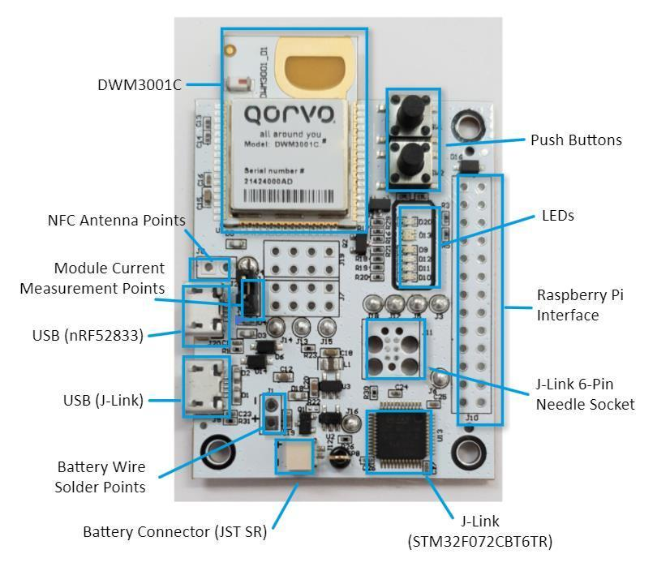

스마트헤드폰 · UWB 하드웨어
DWM3001CDK
UWB와 BLE를 한 모듈에서 제어하는 구성
평가보드 상단의 DWM3001C가 실제 태그에 들어갈 부품이다. 하단의 J-Link와 두 USB 포트는 펌웨어를 기록하고 동작을 관찰하는 데 쓰인다.


구성 부품과 역할
실장 모듈
DWM3001C
27 × 19.13 × 3.2 mm. DW3110과 UWB 안테나, nRF52833 MCU·BLE를 통합해 모듈에서 세션과 거리 측정을 수행한다.
모듈 내 센서
3축 가속도계
움직임이나 기울기 변화를 감지한다. 머리의 좌우 회전을 추적하려면 기존 헤드폰의 자이로를 포함한 BMI270을 함께 사용한다.
평가보드
J-Link와 사용자 인터페이스
J-Link USB로 펌웨어를 기록·디버깅한다. 별도 USB는 모듈의 nRF52833에 연결된다. 버튼·LED로 예제 상태를 확인하고 배터리 커넥터로 이동 시험을 할 수 있다.
측정값이 만들어지는 과정
- J-Link로 NI 액세서리 예제 기록
- nRF52833이 BLE로 iPhone과 세션 설정
- DW3110이 거리 측정에 참여
기존 DWM1000보다 가로·세로가 큰 모듈이다. 캐리어와 전원, 메인 프로세서로 측정값을 보내는 인터페이스를 설계해야 한다. 단일 UWB 안테나이므로 고정 앵커 자체의 AoA 측정용으로 선정하기 어렵다.
프로젝트에서 확인할 항목
iOS는 Qorvo Nearby Interaction과 대응 펌웨어로 거리를 확인한다. 일반 CDK 펌웨어와 바로 짝지을 Android 전용 측정 앱은 미확인이다. 완성 헤드폰에서는 가려짐에 따른 거리 오차와 BLE 재연결 후 세션 복구를 확인한다.